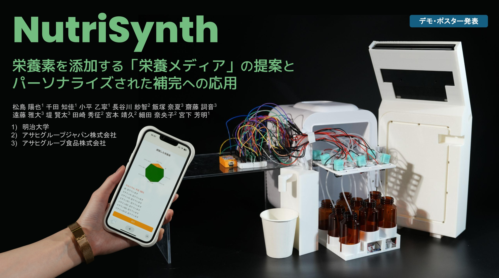

従来の味覚メディアは味をデジタルに表現できますが栄養を供給できず、一方サプリメント等は食体験と分離され継続が困難であるという課題がありました。そこで、味覚メディアと連動して栄養を補完する「栄養メディア」という新概念を提案し、ユーザーの嗜好や健康状態に応じて最適な味覚・栄養体験を提供するシステムの開発に着手しました。
学部3年次（2025年4月〜、現在進行中）
使用言語：JavaScript, C++
ハードウェア：Arduino
その他：Git（バージョン管理）、Render（デプロイ）
主著者として『NutriSynth: 栄養素を添加する「栄養メディア」の提案とパーソナライズされた補完への応用』という題でアサヒグループと共同研究を行い、エンタテインメントコンピューティング2025でデモ・ポスター発表を行いました。カルシウムや鉄、ビタミン類など8種類の栄養素をμL単位で吐出できるデバイスを設計・実装し、GPT-4とRAGを活用して食事画像から栄養素を推定してユーザーの不足分を可視化・補完するWebアプリ「NutriRefill」も開発しました。
© Haruya Matsushima
